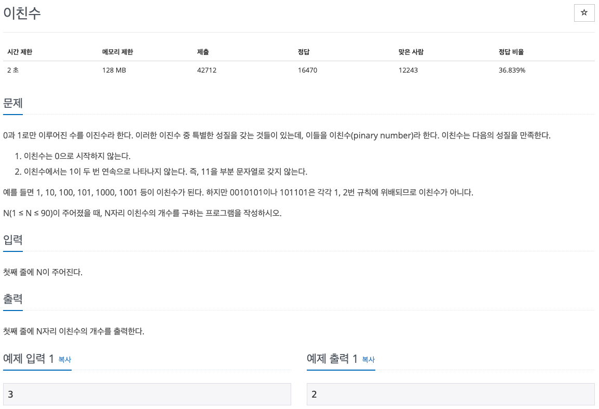

백준 문제 풀이: 2193 - 이친수

문제 파악
이친수의 성질에 유의해 개수를 구하도록 한다.
문제 풀이
이친수의 개수를 구하기 위해 모든 이진수에 대해 해당 성질을 만족하는지 검사를 하게 되면, 정말 많은 시간이 걸릴 수 있다. 따라서, 다른 방법을 생각해내야 하는데, 몇 가지 예시를 분석해보니 동적 계획법(Dynamic Programming)을 적용할 수 있었다.
주어진 입력이 5인 경우를 예로 들어 모든 경우를 찾아보면 다음과 같다.
100000 100001 100010 100100 100101 101000 101001 101010
이 중 100000 100001 100010 100100 100101은 입력이 4인 경우의 수와 같다.
그 이유는 앞에서 세번째 수가 0이라 했을 때(100***), 입력이 4인 경우의 수(10***)를 구하는 것과 같기 때문이다.
비슷하게 나머지 101000 101001 101010은 입력이 3인 경우의 수와 같다.
그 이유는 앞에서 세번째 수가 1이라 했을 때(네번째 수는 0만 가능하므로, 1010**), 입력이 3인 경우의 수(10**)를 구하는 것과 같기 때문이다.
따라서, 입력 n에 대한 이친수의 개수는 다음과 같은 공식을 구할 수 있다.
count(n) = count(n-1) + count(n-2)
이렇게 재귀식이 구해지면, 동적 계획법으로 해결하기 적합하고, 그 구현 또한 쉬워진다.
n이 0 또는 1인 경우의 초기값을 구해놓고, 2부터 n까지 증가시키며 이친수의 개수를 구하면 된다.
풀이 소스
문제 풀이 환경: Python 3.7
1
2
3
4
5
6
7
n = int(input())
counts = [0, 1]
for i in range(2, n + 1):
counts.append(counts[i - 1] + counts[i - 2])
print(counts[-1])